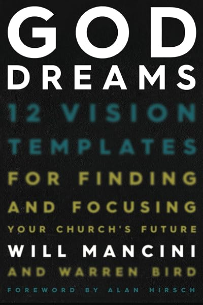

Pivvot Vision Framing co::Lab · 2026 Overview
Share this page with your leadership team. It's the full picture of the co::Lab — what it is, how it works, the investment, and how to join — built on the Vision Frame that has served 40,000+ church teams.
What it is
RunFree.Co's signature service reimagines Vision Framing for authentic, disciple-making church growth. For over two decades, Will Mancini and his team have guided churches in articulating their unique vision through the celebrated Vision Frame. The Pivvot Process takes it further — helping you articulate a truly disciple-making vision unique to your context.
It's best to view this not as a typical consulting project, but as a fractional strategic-development executive pastor for a year — walking your team from busy and blurry to clear and disciple-making.
The road map
 01Funnel Fusion
01Funnel Fusion 02Crowd Cloud
02Crowd Cloud 03Disciple's Journey
03Disciple's Journey 04Kingdom Platform
04Kingdom Platform 05Vision Frame
05Vision Frame 06Horizon Storyline
06Horizon StorylineThe process integrates transformative "paradigm steps" to accelerate the shifts you're already talking about — you don't need just another voice, but a coach to complete the conversation:
Why the co::Lab
Through the virtual cohort, video training, and digital portal, your team will:
By the end, you will confidently: (1) clarify your church's unique identity and calling, (2) develop a compelling, actionable vision, (3) create a roadmap for sustainable disciple-making growth, (4) align your team around a shared purpose, and (5) implement effective strategies for ministry today.
The co::Lab isn't about abandoning everything. It's about realigning your church's vision, strategy, and culture with Jesus' original disciple-making mission — a sustainable model for growth that doesn't chase numbers or rely on constant programming.
Proven thought leadership
The process draws directly from four books — and your team gets unlimited digital access to all of them during the coaching year:




The core process
Deliverables: a finished Vision Frame (your church's DNA, codified) and a Horizon Storyline (a God-sized dream with an executable plan) — ministry-design and visionary-planning tools celebrated by churches worldwide for over a decade.
The investment
Format & launch dates: the co::Lab runs fully virtual via Zoom. Specific cohort start dates (and any in-person launch option) are being finalized — ask on your call and we'll confirm the exact schedule for your team.
Your guide

Andrew Estes, RunFree Vision Coach, co-facilitates every session alongside Will Mancini, the founder of the Vision Frame. Andrew has walked church teams through this exact process for years — and would love to hear about your church before you decide anything.
Next step
Apply to hold a spot, or book a no-pressure call with Andrew to talk through fit — no commitment required.
Cohorts are limited to eight churches. Download this overview as a PDF to share with your board.